Introduction
Ce rapport accompagne le relevé d'audit effectué sur le site « Éducation nationale, Enfance et Jeunesse - Luxembourg ».
La méthodologie d'audit employée repose sur le référentiel RGAA 4, consultable à l'adresse suivante : https://accessibilite.public.lu/fr/rgaa4/criteres.html
L'audit a été réalisé au moyen de l'utilisation de navigateurs web et d'outils spécialisés. Des tests de restitution ont également été effectués conformément à la base de référence définie par le RGAA 4.
Échantillon
L'audit a porté sur un échantillon de 12 pages pour le niveau double A (AA) :
Environnement de test (base de référence)
Quelques critères RGAA, notamment ceux de la thématique JavaScript, incluent des tests de restitution à effectuer sur des technologies d'assistance associées à des navigateurs et des systèmes d'exploitation. Pour qu'un dispositif HTML / WAI-ARIA ou son alternative soit considéré comme compatible avec l'accessibilité, il faut qu'il soit pleinement fonctionnel, en termes de restitution et de fonctionnalités sur certaines combinaisons. Vous trouverez une explication détaillée de cet environnement de tests dans le document du RGAA 4.
Nous détaillons ci-dessous la base de référence utilisée pour réaliser les tests de restitution des composants du site.
Environnement de test – ordinateur
| Technologie d'assistance | Navigateur |
|---|---|
| NVDA 2020.3 | Firefox 89 |
| JAWS 2020 | Internet Explorer 11 |
| VoiceOver | Safari 14 |
Environnement de test — mobile
| Système d'exploitation | Technologie d'assistance | Navigateur |
|---|---|---|
| iOS 14.4.2 | VoiceOver (dernière version) | Safari (dernière version) |
Accessibilité des pages auditées
Le site présente un niveau général d'accessibilité moyen.
Le niveau moyen de conformité relevé atteint 51,43 % de conformité sur l'ensemble des pages auditées, avec 48,08 % de conformité au niveau simple A (A) et 51,43 % de conformité au niveau double A (AA).
Le site est partiellement conforme.
Conformité RGAA 4 du site
| Conforme | Non conforme | |
|---|---|---|
| A | 48,08% | 51,92% |
| AA (légal) | 51,43% | 48,57% |
Note sur le calcul de conformité
La conformité globale (Tableau « Conformité RGAA 4 ») est calculée de la manière suivante : C / (C+NC). C est le nombre de critères conformes et NC le nombre de critères non conformes.
C'est ce nombre qui constitue la référence légale. Il représente le taux de conformité de l'échantillon.
Il est normal que le taux de conformité global diffère sensiblement du taux de conformité par page. En effet, un critère NC (non conforme) sur une page rend le critère non conforme sur l'ensemble de l'échantillon.
Pour qu'un site soit conforme (100 % des critères applicables sont conformes au niveau AA), il est nécessaire que le taux de conformité par page équivaille à 100 %.
Conformité pour chaque niveau
| Conforme | Non conforme | |
|---|---|---|
| A | 48,08% | 51,92% |
| AA | 61,11% | 38,89% |
Moyenne par pages
| Nº page | Titre de la page | %C |
|---|---|---|
| P01 | Page d'accueil | 75,00% |
| P02 | Contact | 82,22% |
| P03 | Mentions légales | 100,00% |
| P04 | Accessibilité | 97,22% |
| P05 | Plan du site | 97,22% |
| P06 | Publications | 80,49% |
| P07 | Agenda | 97,50% |
| P08 | Contenu avec composant JS | 79,59% |
| P09 | Contenu avec tableaux | 81,40% |
| P10 | Page de contenu simple | 75,56% |
| P11 | Page de rubrique | 89,47% |
| P12 | FAQ Covid-19 | 80,00% |
Moyenne par thématiques
| Thématiques | C | NC |
|---|---|---|
| Images | 0% | 100% |
| Cadres | 0% | 100% |
| Couleurs | 33,33% | 66,67% |
| Multimédia | 14,29% | 85,71% |
| Tableaux | 50% | 50% |
| Liens | 0% | 100% |
| Script | 40% | 60% |
| Éléments obligatoires | 50% | 50% |
| Structuration | 0% | 100% |
| Présentation | 75,00% | 25,00% |
| Formulaires | 80% | 20% |
| Navigation | 90% | 10% |
| Consultation | 33,33% | 66,67% |
Impacts utilisateurs
Les principales personnes impactées sont les personnes aveugles et celles qui naviguent au clavier. Les problèmes liés aux scripts, à l'API ARIA et aux formulaires rendent parfois difficile l'utilisation du site par ces utilisateurs. Les utilisateurs malvoyants seront impactés par les problèmes de contraste du site.
Contenus dérogés
La dérogation est un moyen d'exclure du champ d'application du référentiel des contenus particuliers. Les cas de dérogations sont très encadrés, vous en trouverez le détail dans le guide des dérogations.
- Les sous-menus de la navigation principale qui s’affichent au survol (motif : l'utilisateur peut accéder aux sous-rubriques depuis la page principale de chaque rubrique).
Droit à la compensation
Les dérogations émises notamment pour charge disproportionnée demandent en contrepartie la mise en place d'un moyen de compensation pour les utilisateurs. Pour les documents bureautiques par exemple, vous devez fournir un moyen à l'utilisateur de demander une version accessible d'un document s'il en a besoin. Cela peut être un mail ou un formulaire contact.
Note sur le relevé des non-conformités
Ne sont cités dans ce rapport que quelques exemples issus du relevé des non-conformités.
De plus, toutes les occurrences d'une non-conformité ne sont pas listées dans le relevé. Par exemple : pour les défauts de contraste, le relevé mentionne quelques occurrences, mais ne les cite pas tous.
Avis
Le site « Éducation Nationale, Enfance et Jeunesse » repose sur de bonnes connaissances HTML et possède de bonnes bases d'accessibilité, notamment en termes de structure. Néanmoins, le site propose énormément de documents bureautiques non accessibles et sans alternative, posant un problème d'accès à l'information aux personnes naviguant avec un lecteur d'écran.
Par ailleurs, bien que le site n'utilise pas beaucoup de scripts, les quelques scripts présents ne respectent pas les modèles de conception ARIA, ce qui peut gêner les personnes aveugles et toute personne naviguant avec une technologie d'assistance ou au clavier.
La charte graphique du site propose des couleurs dont le rapport de contraste entre le texte et la couleur de fond est souvent insuffisant. La consultation du site peut devenir plus difficile pour les personnes avec une déficience visuelle.
Les non-conformités les plus bloquantes pour les utilisateurs concernent :
- Les scripts ;
- Le contraste des couleurs ;
- Les documents bureautiques ;
- La structure des titres ;
- Les alternatives aux images et les liens image.
Ce sont donc ces points qui devront nécessiter une attention toute particulière et qui demanderont le plus d'efforts.
Annexe technique
Images
Recommandation
Donner à chaque image porteuse d'information une alternative textuelle pertinente et une description détaillée si nécessaire. Lier les légendes à leurs images. Remplacer les images textes par du texte stylé lorsque c'est possible.
Images de décoration
Le site contient des images de décoration qui ne sont pas correctement identifiées, soit parce qu'elles ont une alternative renseignée, soit parce qu'il manque les attributs nécessaires pour qu'elles soient ignorées par les technologies d'assistance.
Ces images n'apportent aucune information et peuvent causer des problèmes de compréhension pour les aveugles et les grands malvoyants qui vont écouter les contenus avec un lecteur d'écran.
- Dans le cas d'une image insérée avec la balise
img, mettre unalt="". - Dans le cas d'une image insérée avec la balise
svg, mettre une propriété ARIAaria-hidden="true".
Constats sur le site
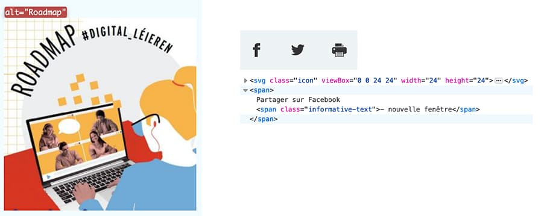Dans la page Covid-19, l'image "Roadmap" est une image de décoration, l'attribut alt doit donc être vide.
Dans l'ensemble des pages internes, les icônes « Facebook », « Twitter » et « Impression » sont des icônes de décoration et doivent être ignorés des technologies d'assistance.
Images porteuses d'information
Il est nécessaire de donner une alternative pertinente dans le cas où la suppression de l'image entraînerait un problème de compréhension des contenus.
Constats sur le site
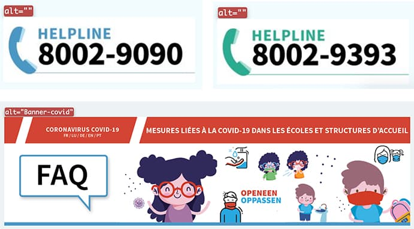Dans la page Covid-19, on retrouve des images porteuses d'information qui n'ont pas d'intitulé ou dont l'intitulé n'est pas pertinent :
- Les images « helpline » doivent reprendre le contenu textuel figurant dans l'image (ex. : « Helpline, n° de téléphone : 8002-9090 »)
- L'alternative textuelle « Banner-covid » n'est pas suffisante et devrait reprendre le contenu textuel de l'image.
Images porteuses d'information complexes
Certaines images porteuses d'informations sont complexes et nécessitent une description détaillée, pertinente, structurée et adjacente à l'image afin de permettre aux personnes ne percevant pas les images (comme les personnes aveugles), ou ayant des difficultés à les comprendre lorsqu'elles contiennent du texte (personnes ayant des difficultés de lecture, comme les dyslexiques par exemple) d'accéder à l'information.
Il sera possible de masquer cette description et de prévoir un bouton permettant à l'utilisateur de l'afficher si besoin (par exemple : « Afficher la description de l'image »). Voir un exemple de ce mécanisme. Il est également possible de proposer un lien adjacent à l'image vers la description détaillée.
Constats sur le site
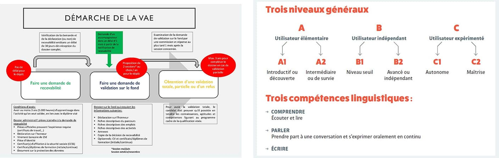Dans les pages Domaines de formations ou encore Validation des acquis de l'expérience, on retrouve des images porteuses d'information complexes qui nécessitent une description détaillée.
Cadres
L'absence d'identification des cadres peut poser un problème de repérage dans la structure de la page ou de compréhension des contenus pour les personnes aveugles.
Constats sur le site

Dans la page Droits de l’enfant, on retrouve un cadre (iframe) sans attribut title.
Couleurs
Recommandation
Ne pas donner l'information uniquement par la couleur et utiliser des contrastes de couleurs suffisamment élevés pour les textes et les composants d'interface.
Contrastes des textes
Plusieurs couleurs présentent un rapport de contraste insuffisant, ce qui peut poser problème aux grands malvoyants et aux déficients visuels qui ont des difficultés à percevoir les couleurs ou les contrastes.
Rapports de contrastes définis par le RGAA
- Pour les textes qui ont une taille de police calculée inférieure à 24px sans effet de graisse ou une taille de police calculée inférieure à 18,5px avec effet de graisse, le rapport de contraste entre la couleur du texte (y compris le texte en image) et son arrière-plan doit être de 4.5:1, au moins.
- Pour les textes qui ont une taille de police calculée supérieure ou égale à 24px sans effet de graisse ou une taille de police calculée supérieure ou égale de 18,5px avec effet de graisse, le rapport de contraste entre la couleur du texte (y compris le texte en image) et son arrière-plan doit être de 3:1, au moins.
Vous pouvez foncer les couleurs pour obtenir le rapport de contraste exigé.
Si la charte graphique ne peut être modifiée, fournissez une méthode aux utilisateurs pour consulter le site avec des contrastes suffisants. Ceci peut être réalisé simplement avec une fonctionnalité JavaScript et une surcharge CSS des couleurs.
Vous pouvez voir un exemple de ce type de mécanisme sur le site sncf.com. Dans les réglages d'accessibilité, vous trouverez une option qui permet d'afficher le site avec des contrastes renforcés et inversés.
Constats sur le site
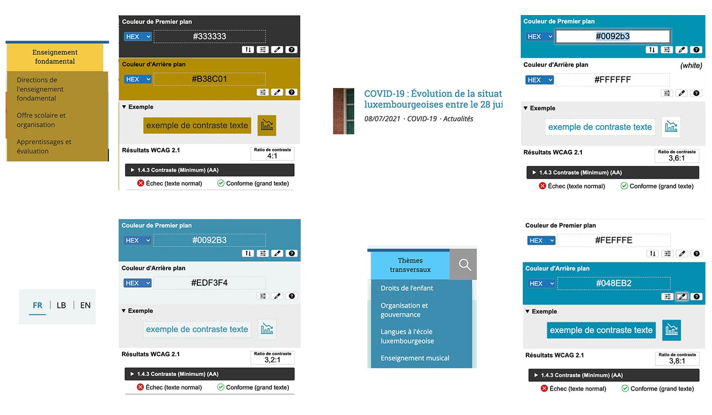Exemple sur la page d'Accueil :
- Dans le menu principal, les liens gris sur fond doré ont un rapport de contraste de 4 au lieu de 4,5 ;
- Dans le bloc À la une, les liens turquoise sur fond blanc ont un rapport de contraste de 3,6 au lieu de 4,5 ;
- Dans le menu de langue, les liens bleus sur fond gris clair ont un rapport de contraste de 3,2 au lieu de 4,5 ;
- Dans le menu principal, les liens blancs sur fond bleu clair ont un rapport de contraste de 3,8 au lieu de 4,5 ;
Contraste des composants d'interface
Les composants d'interface, les illustrations porteuses d'information ou encore les mises en couleurs porteuses d'information doivent être suffisamment contrastés pour être perçus par les utilisateurs ayant des troubles de perception des couleurs. Par exemple, une icône porteuse d'information devra avoir un rapport de contraste avec la couleur de fond de 3. De même, pour un champ de saisie de formulaire, dont la zone active est matérialisée par sa bordure, alors la couleur de cette bordure devra avoir un rapport de contraste de 3 avec la couleur de fond de la page.
Constats sur le site
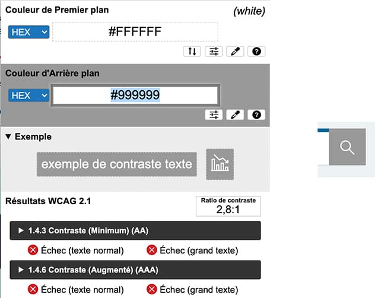Exemple sur la page d'Accueil :
- Dans la barre de menu, l'icône blanche du moteur de recherche sur fond gris a un rapport de contraste de 2,8 au lieu de 3.
Multimédia
Recommandation
Donner si nécessaire à chaque média temporel une transcription textuelle, des sous-titres synchronisés et une audiodescription synchronisée pertinents. Donner à chaque média non temporel une alternative textuelle pertinente. Rendre possible le contrôle de la consultation de chaque média temporel et non temporel au clavier et s'assurer de leur compatibilité avec les technologies d'assistance.
Identifier les vidéos
Il est nécessaire d'identifier la vidéo et permettre ainsi aux utilisateurs de comprendre quelle est l'information présentée dans ce contenu.
Vous disposez de deux méthodes pour le faire :
- soit faire précéder la vidéo par un titre (solution recommandée) ;
- soit faire suivre la vidéo d'une phrase de légende (paragraphe).
Transcription textuelle
Les vidéos présentes sur le site ne disposent pas de transcription textuelle. Il s'agit d'un impact majeur d'accessibilité. En effet, la transcription textuelle est utile pour différents types d'utilisateurs (aveugles, malvoyants, sourds, malentendants, handicapés moteurs, handicapés cognitifs).
Cette transcription doit être un fichier structuré (docx, HTML) qui reprend toutes les informations présentes (visuelles et sonores) dans la vidéo.
Cette transcription peut être située :
- soit sur la même page que la vidéo ;
- soit ailleurs sur le site. Dans ce cas, ajouter alors un lien vers la transcription sous la vidéo par exemple.
Sous-titres
Chaque vidéo doit disposer de sous-titres synchronisés pertinents, pour permettre aux utilisateurs sourds ou malentendants d'accéder au contenu oralisé de la vidéo.
L'utilisateur doit pouvoir activer ou désactiver les sous-titres depuis le lecteur vidéo. Si ce n'est pas possible, une solution consiste à fournir deux versions de la même vidéo : une version sans sous-titres et une version sous-titrée (On fera ensuite un lien réciproque de l'une vers l'autre).
Audiodescription
Chaque vidéo doit disposer d'une version audiodécrite, si nécessaire. En effet, des textes incrustés ou des actions d'intérêt dans une vidéo ne seront pas perçus par un utilisateur aveugle.
De plus, l'utilisateur doit pouvoir activer ou désactiver l'audiodescription depuis le lecteur vidéo.
Constats sur le site
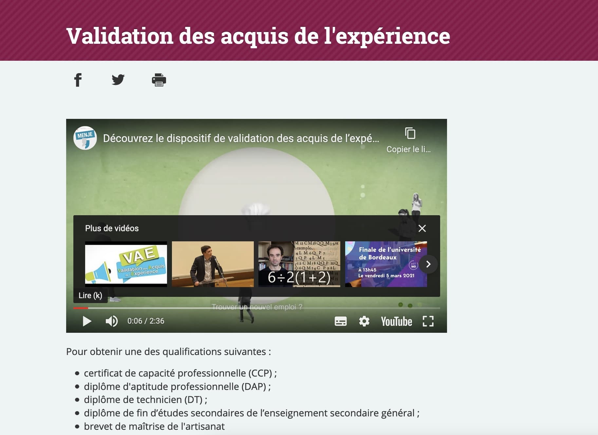Dans la page Validation des acquis de l'expérience, pour la vidéo de présentation, il manque les éléments suivants :
- Absence de transcription textuelle ;
- Absence de sous-titres synchronisés dans la langue de la vidéo (actuellement il y a juste des sous-titres en français) ;
- Absence d'audiodescription, la vidéo contenant du contenu incrusté (les logos des partenaires à la fin de la vidéo notamment).
Contrôles
Le lecteur vidéo utilisé doit lui aussi être accessible :
- il doit être utilisable au clavier et à la souris ;
- il doit proposer les contrôles essentiels (lecture/pause, contrôle du volume, activation/désactivation des sous-titres, etc.) ;
- il doit être compatible avec les API d'accessibilité ;
- ses boutons et composants d'interface porteurs d'information doivent être suffisamment contrastés (rapport de contraste de 3:1 avec la couleur d'arrière-plan contiguë).
Constats sur le site
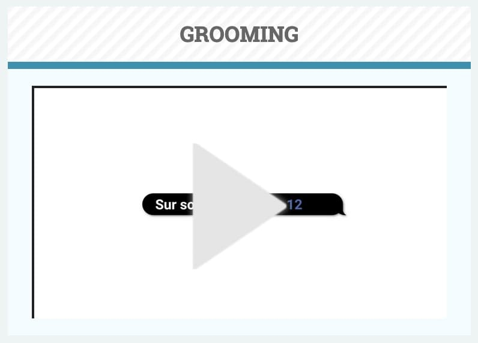Dans la page Droits de l'enfant, le lecteur vidéo n'est pas atteignable au clavier.
Tableaux
Recommandation :
Donner un résumé à chaque tableau de données complexe, s'assurer que pour chaque tableau de données ayant un titre, ce titre est pertinent, identifier clairement les cellules d'en-tête, utiliser un mécanisme pertinent pour lier les cellules de données aux cellules d'en-tête. Pour chaque tableau de mise en forme, veiller à sa bonne linéarisation.
Tableaux de mise en forme
La restitution des tableaux peut poser problème pour les personnes aveugles, car les technologies d'assistance tentent d'optimiser la navigation dans les tableaux, en modifiant par exemple le comportement des flèches de direction pour circuler plus facilement entre les cellules.
Dans un tableau de données, cela est utile et correspond au format de données tabulaires, mais dans un tableau de mise en forme, ce comportement est problématique et peut venir perturber le parcours des informations.
L'API ARIA propose une propriété (role="presentation") qui permet d'annuler la sémantique des éléments restitués.
Constats sur le site
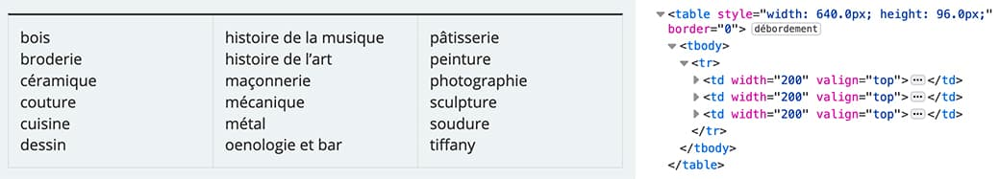Dans la page Domaines de formation, on retrouve des tableaux de présentation sans la propriété ARIA role="presentation".
Liens
Recommandation :
Donner des intitulés de lien explicites, grâce à des informations de contexte notamment, utiliser le titre de lien le moins possible. S'assurer que le nom visible est contenu dans le nom accessible.
Pertinence des intitulés
Un lien possède généralement un intitulé et un contexte. L'intitulé est le texte présent dans la balise <a> (ou la valeur de l'attribut alt de l'image dans le cas d'un lien-image) et le contexte du lien est représenté par le titre qui précède, le titre du lien (l'infobulle) ou tout simplement le texte dans lequel il est inséré.
Pour être considéré comme pertinent, l'intitulé d'un lien doit permettre de comprendre sa destination en prenant en compte son contexte.
Constats sur le site
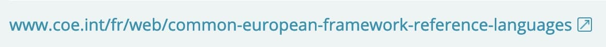Dans la page Domaines de formation, l'intitulé du lien « www.coe.int/fr/web/common-european-framework-reference-languages » n'est pas pertinent et devrait être remplacé par un intitulé plus explicite.
Présence d'intitulés
Un lien doit toujours posséder un intitulé permettant à l'utilisateur de comprendre sa destination. Les liens contenant uniquement des objets graphiques (images, icônes, etc.) posent souvent problème pour les personnes aveugles.
Pour ces liens, la technique pour fournir un intitulé dépend des cas :
- Si ces liens-images sont construits avec des balises images (
<img />), renseignez l'alternative de l'image (par exemple :<a href="https://twitter.com/example"><img src="path/to/img/png"alt="Suivez-nous sur Twitter" /></a>) - Si ces liens-images sont construits avec des balises SVG (
<svg>), alors ajoutez sur cette balise unrole="img"pour indiquer aux lecteurs d'écran qu'il s'agit bien d'une image et un intitulé pararia-label="Suivez-nous sur Twitter".
Constats sur le site
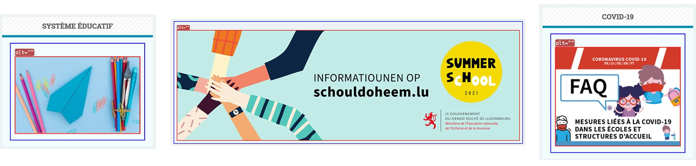Exemple sur la page d'Accueil :
- Le bandeau principal est un lien-image sans intitulé (
altvide) ; - Dans les blocs Covid-19 et Système éducatif, on retrouve des liens-images sans intitulé (
altvide).
Scripts
Recommandation :
Donner si nécessaire à chaque script une alternative pertinente. Rendre possible le contrôle de chaque code script au moins par le clavier et la souris et s'assurer de leur compatibilité avec les technologies d'assistance. Identifier les messages de statut lorsque c'est nécessaire.
Utilisation des boutons et des liens
Pour les aveugles et les grands malvoyants qui utilisent un lecteur d'écran, ce manque de distinction claire entre les liens et les boutons peut poser de graves problèmes.
Ainsi, un bouton implémenté sous la forme d'un lien qui déclenche une action de la page risque de perturber l'utilisateur qui s'attendra au chargement d'une nouvelle page.
De manière générale, les liens devraient être réservés à l'affichage d'une nouvelle page ou la création de liens d'accès rapide dans le contenu. Dans tous les autres cas, l'emploi d'un bouton d'action est plus pertinent.
Enfin, chaque bouton doit avoir un nom accessible défini, soit par l'intermédiaire d'un texte (visible ou positionné hors écran) ou d'une propriété title, aria-label ou aria-labelledby.
Constats sur le site
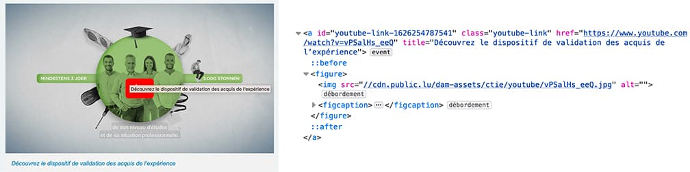Dans la page Validation des acquis de l'expérience, le lien qui déclenche l'ouverture de la modale de préférence YouTube devrait être implémenté sous forme de boutton.
Fenêtres modales
Le site possède des fenêtres modales. Ces fenêtres doivent pouvoir être utilisables à la navigation au clavier et doivent être disponibles pour les technologies d'assistance afin que les utilisateurs aveugles accèdent à leur contenu.
Pour ce type d’élément, l’implémentation du motif ARIA Dialog est recommandée.
Constats sur le site
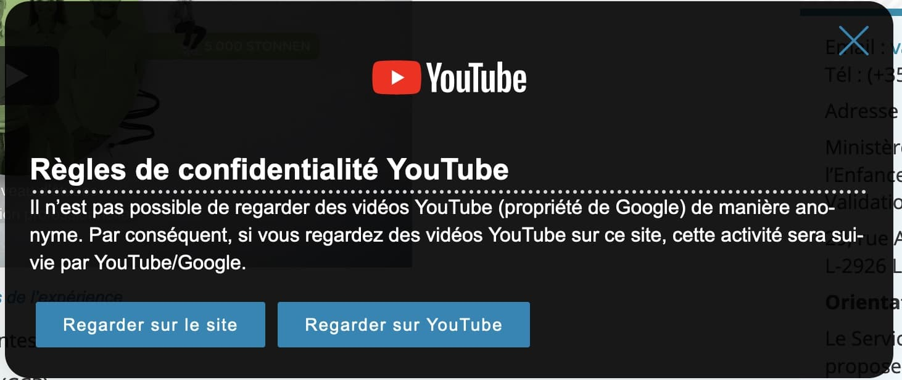Dans certaines pages, on retrouve une fenêtre modale de préférences YouTube qui implémente mal le modèle de conception ARIA Dialog.
Par ailleurs, le bouton de fermeture n'a pas d'intitulé et les boutons « Regarder sur le site » et « Regarder sur youtube » possèdent un attribut href qui n'a pas lieu d'être.
Gestion de la visibilité de zones
Le site possède des fonctionnalités d'affichage ou de masquage des zones de contenus. L'état affiché/masqué du contenu additionnel doit pouvoir être disponible pour les technologies d'assistance afin que les utilisateurs aveugles accèdent à cet état.
Pour ce type d’élément, l’implémentation du motif ARIA Disclosure est recommandée.
Constats sur le site
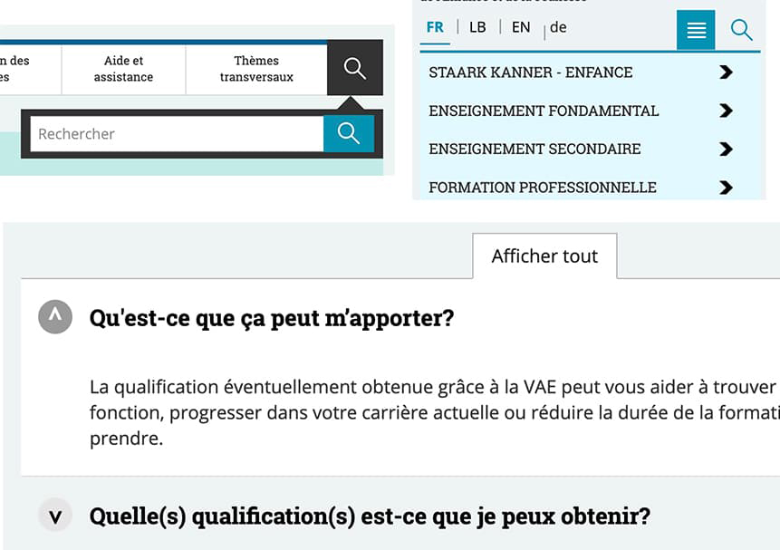On retrouve sur le site des fonctionnalités qui ne respectent pas le motif ARIA Disclosure :
- Dans la zone de navigation, le bouton pour afficher/masquer le moteur de recherche ;
- Dans l'en-tête en version responsive, le bouton pour afficher/masquer le menu mobile. Par ailleurs, lorsque le menu est affiché, on devrait pouvoir tabuler directement dedans ;
- Dans la page Validation des acquis de l'expérience, le bouton « Afficher tout ».
Message de statut
Les messages de statut concernent les messages d'alerte, de confirmation ou d'historisation. Dans tous ces cas, certains utilisateurs, par exemple les personnes aveugles ou les utilisateurs d'une loupe d’écran vocalisée, risquent de ne pas prendre connaissance de ces messages si leur restitution n'est pas contrôlée.
L'API ARIA propose plusieurs rôles spécifiques qui permettent de contrôler la restitution de ce type de message :
- Le
role="alert"pour les messages d'alerte ; - Le
role="status"pour les messages de confirmation ; - Le
role="log"pour les messages d'historisation.
L'utilisation appropriée de ces rôles va permettre de déclencher leur vocalisation dès qu'ils deviendront actifs (rendus visibles ou insérés dans le DOM).
Constats sur le site
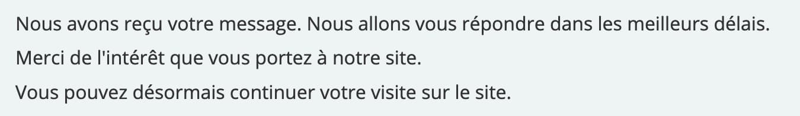Dans la page Contact, le message de confirmation « Nous avons reçu votre message […] » devrait être défini par un rôle ARIA spécifique.
Changement de contexte
Un changement de contexte est une situation où un utilisateur ne peut pas anticiper le fonctionnement d'une fonctionnalité lorsque celle-ci ouvre une nouvelle page, valide un formulaire ou ajoute ou modifie du contenu dans la page par exemple.
Cela concerne plus spécifiquement les fonctionnalités qui se lancent sans que l'utilisateur puisse les anticiper comme, par exemple, la soumission automatique d’un champ de formulaire sur la sélection d'un item ou lorsque l'utilisateur quitte un champ de saisie.
Constats sur le site
Dans l'Agenda, après avoir saisi une date dans un des champs et lorsqu'on quitte ce champ de saisie, le formulaire se valide automatiquement.
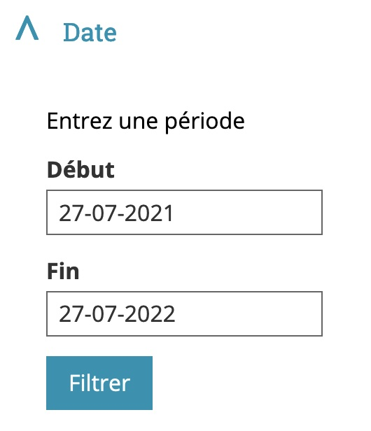Éléments obligatoires
Recommandation
Vérifier que chaque page web a un code valide selon le type de document, un titre pertinent et une indication de langue par défaut. Vérifier que les balises ne sont pas utilisées uniquement à des fins de présentation, que les changements de langues et de direction de sens de lecture sont indiqués.
Titre de la page
Le titre de la page (visible dans l'onglet du navigateur) est un élément de repère dans le site web. Pour les utilisateurs de lecteurs d'écran (utilisateurs aveugles ou grands malvoyants), c'est le premier élément restitué par le lecteur d'écran au chargement de la page. Cela permet de donner du contexte aux utilisateurs qui n'ont pas une vision globale de la page. Pour les utilisateurs avec des troubles de la mémoire, c'est l'information à laquelle ils accèdent lorsqu'ils naviguent avec l'historique de navigation du navigateur. Il est donc essentiel d'avoir des titres de pages pertinents, concis et très souvent uniques dans le site, et qui reflètent de la position de l'utilisateur dans le site web.
Il est des cas particuliers, comme les pages dont le contenu est une liste de résultats paginés (ex. : les résultats de recherche), pour lesquels le titre doit refléter la nature de la recherche ainsi que le numéro de page en cours de consultation.
Constats sur le site
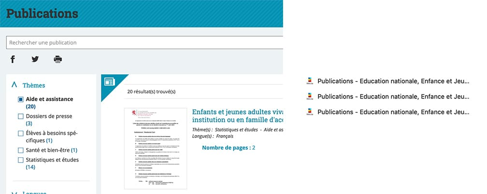Dans la page Publications, le titre de la page devrait indiquer le thème recherché ou sélectionné ainsi que le numéro de page en cours de consultation.
Indication de langue
Les lecteurs d'écran utilisent les indications de langue pour vocaliser le contenu dans la langue définie. La page doit contenir une définition de langue principale (généralement sur l'élément html).
Ensuite, les éléments de langue étrangère présente dans le contenu doivent être signalés. Si, dans la page, on trouve des termes absents du dictionnaire de la langue principale de la page, il faut les identifier afin que le lecteur d'écran restitue dans la langue appropriée. En effet, une mauvaise prononciation pourrait mener à des incompréhensions pour les utilisateurs qui reposent uniquement sur des restitutions orales. Les noms propres sont exclus de cette obligation.
Constats sur le site
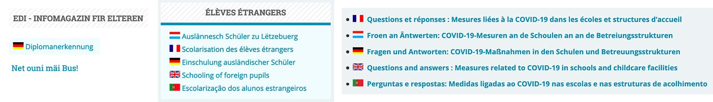Exemple sur la page d'Accueil :
- « Net ouni mäi Bus! » dans un article À la une ;
- « EDI - Infomagazin fir Elteren » dans un bloc en colonne latérale ;
- Les différentes traductions de « Scolarisation des élèves étrangers » dans le bloc Élèves étrangers ;
- « Diplomanerkennung » dans le bloc Diplômes étrangers.
Dans la page Covid-19, la phrase « Questions et réponses : Mesures liées à la COVID-19 dans les écoles et structures d‘accueil » est traduite dans plusieurs langues (luxembourgeois, allemand, anglais et portugais) mais sans indication de langue.
Validité du code
Les technologies d'assistances, comme les lecteurs d'écran ou les systèmes de contrôle à la voix, s'appuient sur le code des pages pour générer les restitutions et les interactions avec l'utilisateur. Un lecteur d'écran va exploiter le code HTML fourni par le navigateur et les informations accessibles au moyen des API d'accessibilité du système.
Si le code comporte des erreurs (balises mal fermées par exemple), il y a un risque que les fonctionnalités du lecteur d'écran soient impactées, comme la navigation de lien en lien par exemple.
Pour vérifier la conformité d'une page, vous pouvez utiliser le validateur mis à disposition par le W3C.
Constats sur le site
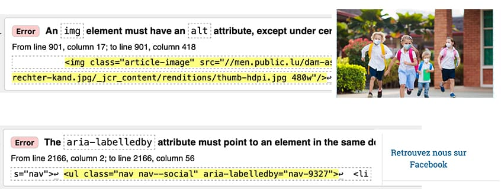Exemple sur la page d'Accueil :
- Attribut
altmanquant ou incomplet sur certaines images du bloc À la une ; - Valeur d'attribut
aria-labelledbyincorrect.
Balises utilisées à des fins de présentation
Les éléments de structure HTML ont chacun une sémantique particulière (paragraphe, titre, image, lien, etc.). Si les éléments sont mal employés (détournés de leur utilité première), cela peut poser des problèmes aux utilisateurs qui naviguent à l'aide d'une technologie d'assistance (lecteur d'écran, plug-in…). En effet, les technologies d'assistance disposent de raccourcis permettant de naviguer rapidement entre certains types d'éléments (paragraphes, titres, listes, etc.). Si ces éléments sont mal employés, les utilisateurs ne peuvent pas utiliser ces fonctionnalités de repère et de navigation dans le contenu.
Constats sur le site
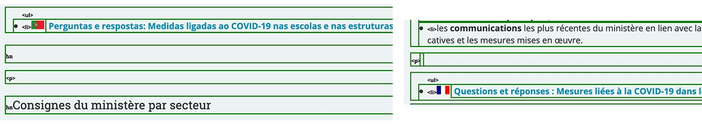Dans la page Covid-19, on retrouve des balises <p> ou <h3> vides utilisées pour créer de l'espacement.
Structuration de l'information
Recommandation
Utiliser des titres, des listes, des abréviations et des citations pour structurer l'information. S'assurer que la structure du document est cohérente.
Titres
Le titrage des contenus est une étape importante dans la structuration des contenus. Cela répond à deux besoins :
- identifier rapidement un contenu recherché ;
- naviguer rapidement dans le contenu en se déplaçant de titre en titre.
Un titrage correct fournit à l'utilisateur d'un lecteur d'écran un plan du document et lui permet de naviguer de titre en titre pour se déplacer plus rapidement dans le contenu de la page.
Pour valider la structure de votre page, vous pouvez utiliser l'extension Firefox HeadingsMap. Lorsque l'extension est active, sélectionnez l'onglet « Headings » et vérifiez la cohérence et l'imbrication des titres.
Constats sur le site
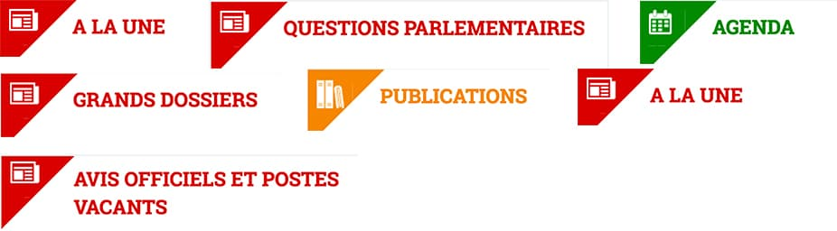Dans la page d'Accueil, certains titres sont manquants. Les termes suivants devraient être des titres de niveau 2 : « À la une », « Agenda », « Questions parlementaires », « Publications », « Grands Dossiers », « Avis officiels et Postes vacants ».

Dans la page Accessibilité, la hiérarchie des titres n'est pas cohérente : on passe d'un niveau 1 à un niveau 3.
Listes
La structuration en listes permet aux utilisateurs de lecteurs d'écran de consulter plus rapidement le contenu, grâce à des raccourcis spécifiques, et d'accéder directement à une liste ou de la passer sans avoir à en parcourir tous les items.
Constats sur le site
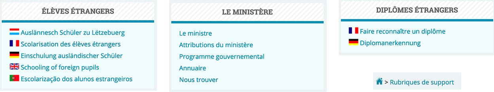Certains blocs contiennent une suite de liens qui devraient être structurés sous forme de liste non ordonnée :
- Dans la page d'Accueil, la suite de liens des blocs « Élèves étrangers », « Le ministère » et « Diplômes étrangers ».
- Dans les pages internes, la suite de liens dans le fil d'Ariane.
Structure du document
L'utilisation correcte des balises HTML5 et des landmarks ARIA va permettre d'enrichir la restitution pour les utilisateurs aveugles qui ne perçoivent pas les mises en forme : la navigation principale ne sera plus perçue simplement comme une liste de liens, elle sera restituée à l'utilisateur comme un élément de navigation, par l'intermédiaire du lecteur d'écran qui annoncera « région » ou « repère ».
De plus, ces marqueurs sémantiques vont également constituer des éléments de navigation rapide dans la page. Grâce à un raccourci clavier, certains utilisateurs vont pouvoir naviguer plus rapidement entre les régions qui auront été ainsi identifiées.
Constats sur le site
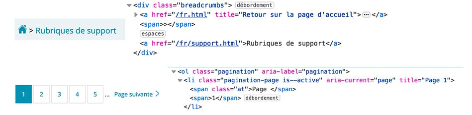- Le fil d'Ariane n'est pas implémenté dans un élément
nav:<nav role="navigation" aria-label="Fil d'Ariane">. - La pagination n'est pas implémentée dans un élément
nav:<nav role="navigation" aria-label="Pagination">.
Présentation de l'information
Recommandation
Utiliser des feuilles de styles pour contrôler la présentation de l'information. Vérifier l'effet de l'agrandissement des tailles des caractères sur la lisibilité. S'assurer que les liens sont correctement identifiables, que la prise de focus est signalée, que l'interlignage est suffisant et donner la possibilité à l'utilisateur de contrôler la justification des textes. S'assurer que les textes cachés sont correctement restitués et que l'information n'est pas donnée uniquement par la forme ou la position d'un élément. S'assurer que les contenus sont lisibles et utilisables dans une fenêtre de largeur réduite. Veiller à ce que l'application de paramètres typographiques n'entraîne pas la perte de contenu ou de fonctionnalité. S'assurer que les contenus qui apparaissent au survol et à la prise de focus puissent être contrôlés par l'utilisateur.
Utilisation de CSS exclusivement
Certains utilisateurs qui présentent des troubles de la lecture (personnes dyslexiques par exemple), vont avoir besoin d'adapter la présentation des pages avec leurs propres mises en forme. Cela est possible sans difficulté si le site web utilise exclusivement les feuilles de styles CSS pour réaliser les mises en forme. Cependant, l'utilisation d'attributs et balises HTML de mise en forme rend ces adaptations plus compliquées, sinon impossibles.
Le RGAA donne la liste des attributs et balises qu'il est interdit d'utiliser.
Constats sur le site
Dans la page Droits de l'enfant, on retrouve un attribut scrolling sur l'élément <iframe> alors que cela devrait être géré en CSS.
Visibilité de la prise de focus
Les personnes avec un handicap moteur qui naviguent au clavier peuvent rencontrer des difficultés considérables à utiliser du contenu si elles ne sont pas en mesure de repérer l'indication visuelle du focus et ses déplacements.
Constats sur le site
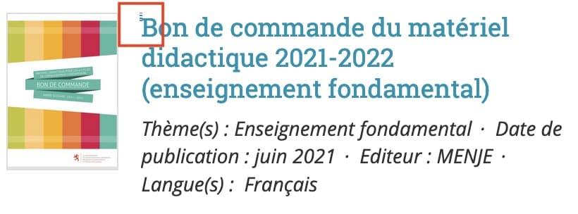Dans la page d'Accueil, la prise de focus n'est pas très visible pour les liens-image du bloc Publications.
Formulaires
Recommandation :
Associer pour chaque formulaire chacun de ses champs à son étiquette, grouper les champs dans des blocs d'informations de même nature, regrouper les items de même nature dans les listes de choix, donner à chaque bouton un intitulé explicite. Vérifier la présence d'aide à la saisie, s'assurer que le contrôle de saisie est accessible et que l'utilisateur peut contrôler les données à caractère financier, juridique ou personnel.
Contrôle de saisie et aide à la saisie
Tous les champs obligatoires doivent être identifiés préalablement à toute validation de l’utilisateur.
Pour les champs qui attendent un format de saisie particulier pour être validés, ce format doit être spécifié à l’utilisateur par un passage de texte visible à proximité du champ. De plus, si l’utilisateur commet une erreur sur ce champ, alors le message d’erreur doit présenter un exemple réel de saisie.
Enfin, les messages d'erreur de saisie des champs de formulaire doivent être liés correctement aux champs en erreur.
Constats sur le site
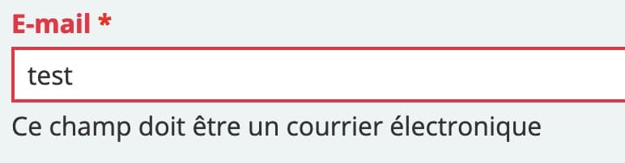Dans le formulaire de contact, le format attendu pour le champ « E-mail » n'est pas suffisant, il faudrait proposer un exemple.
Identification des données attendues
Certains utilisateurs qui ont des troubles d'accès au langage verbal (paralysie cérébrale, aphasie par exemple) auront des difficultés à accéder au sens des termes écrits. Ainsi, pour leur permettre de remplacer les étiquettes présentes dans les formulaires par des étiquettes (verbales ou imagées) qu'ils connaissent, il est nécessaire d'identifier les champs avec un attribut particulier, de sorte qu'une technologie d'assistance pourra réaliser la personnalisation du formulaire nécessaire à l'utilisateur.
L'identification de ces champs permet également aux utilisateurs d'employer des outils pour remplir automatiquement les champs identifiés avec des valeurs de l'utilisateur.
On ne va rechercher que les champs qui attendent une donnée personnelle. Le RGAA demande d'utiliser l'attribut autocomplete et il fournit l'ensemble des valeurs possibles pour l'attribut.
Constats sur le site
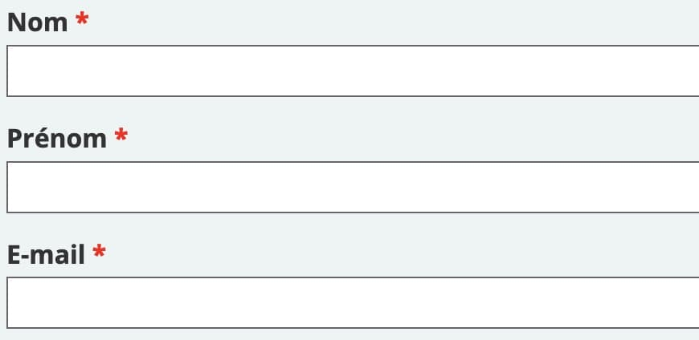Dans le formulaire de contact, les champs « Nom », « Prénom » et « E-mail » ne possèdent pas d'attribut autocomplete.
Navigation
Recommandation :
Faciliter la navigation dans un ensemble de pages par au moins deux systèmes de navigation différents (menu de navigation, plan du site ou moteur de recherche), un fil d'Ariane et l'indication de la page active dans le menu de navigation. Identifier les groupes de liens importants et la zone de contenu et donner la possibilité de les éviter par des liens de navigation interne. S'assurer que l'ordre de tabulation est cohérent et que la page ne comporte pas de piège au clavier. S'assurer que les raccourcis clavier qui utilisent une seule touche sont contrôlables par l'utilisateur.
Ordre de tabulation
La navigation dans les contenus peut être considérablement compliquée pour les personnes aveugles ou les personnes handicapées motrices qui naviguent au clavier si l'ordre de tabulation n'est pas cohérent.
L'ordre de tabulation est déterminé par l'ordre des éléments dans le code HTML. Il ne suit pas forcément l'ordre de lecture de la page ou de l'écran, mais il doit être cohérent en fonction de la nature des contenus et des fonctionnalités.
Constats sur le site
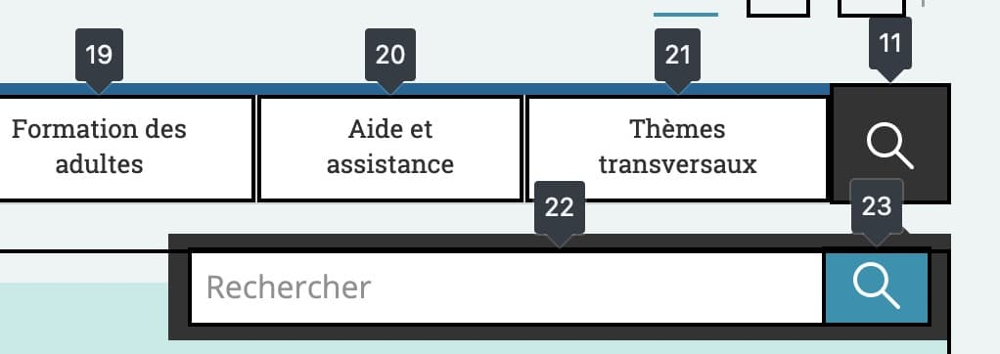Lorsque le moteur de recherche est affiché, en tabulant vers l'arrière (MAJ + TAB) on devrait retourner sur le bouton "topsearch" et non sur le menu de navigation.
Consultation
Recommandation
Vérifier que l'utilisateur a le contrôle des procédés de rafraîchissement, des changements brusques de luminosité, des ouvertures de nouvelles fenêtres et des contenus en mouvement ou clignotants. Ne pas faire dépendre l'accomplissement d'une tâche d'une limite de temps sauf si elle est essentielle et s'assurer que les données saisies sont récupérées après une interruption de session authentifiée. Proposer des versions accessibles ou rendre accessibles les documents en téléchargement. S'assurer que la consultation n'est pas dépendante de l'orientation de l'écran. Toujours proposer un geste simple en alternative d'un geste complexe permettant de réaliser une action.
Documents en téléchargement
Assurez-vous que chaque document soit accessible (cf. les Guides de créations de documents bureautiques accessibles), ou qu'il dispose d'une alternative accessible proposant le même contenu (par exemple, une version HTML correctement structurée).
Constats sur le site
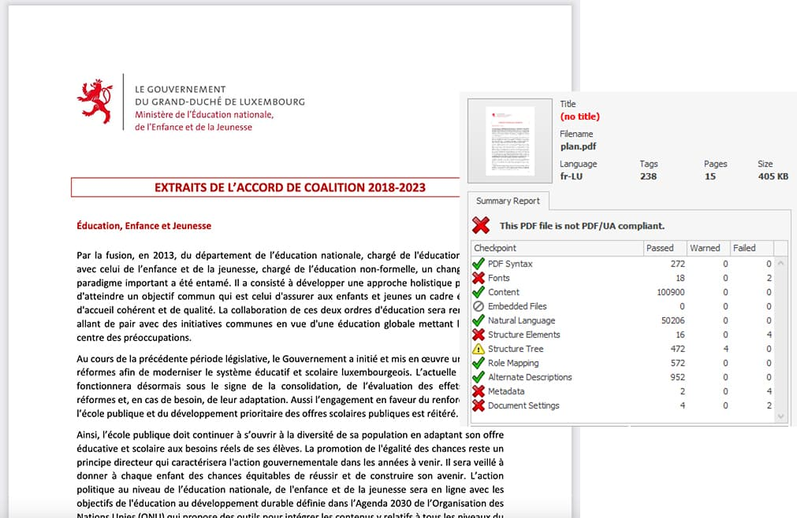Dans la page d'Accueil, le document « plan.pdf » ne possède pas de titre par exemple.
Gestes complexes
Certaines personnes handicapées motrices ne peuvent pas réaliser de gestes complexes, elles utilisent généralement des technologies d'assistance qui leur permettent d'interagir uniquement avec un geste simple comme cliquer sur un bouton par exemple.
Dans ces situations, il est indispensable que le site ou l'application propose pour chaque fonctionnalité basée sur un geste complexe une alternative au moyen d'un geste simple.
Le geste complexe nécessite l'utilisation d'un contact multipoint, comme par exemple, utiliser deux doigts pour zoomer ou dézoomer, ou tracer une trajectoire.
Le geste simple peut être un contact sur un seul point ou toute variation multiple de ce contact (double clic, etc.).
Constats sur le site
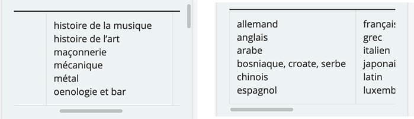Dans la page Domaines de formations, sur mobile, le contenu des tableaux doit être consulté au moyen d'un geste complexe (mouvement de balayage avec le doigt) mais ne possède pas d'alternative simple, comme des boutons par exemple.